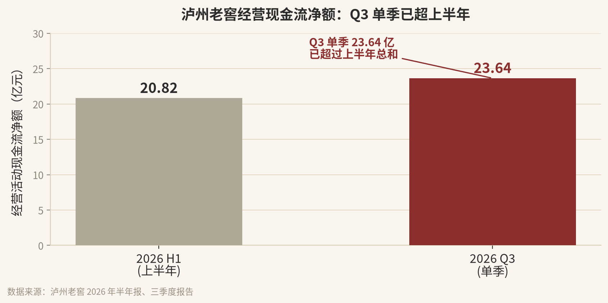
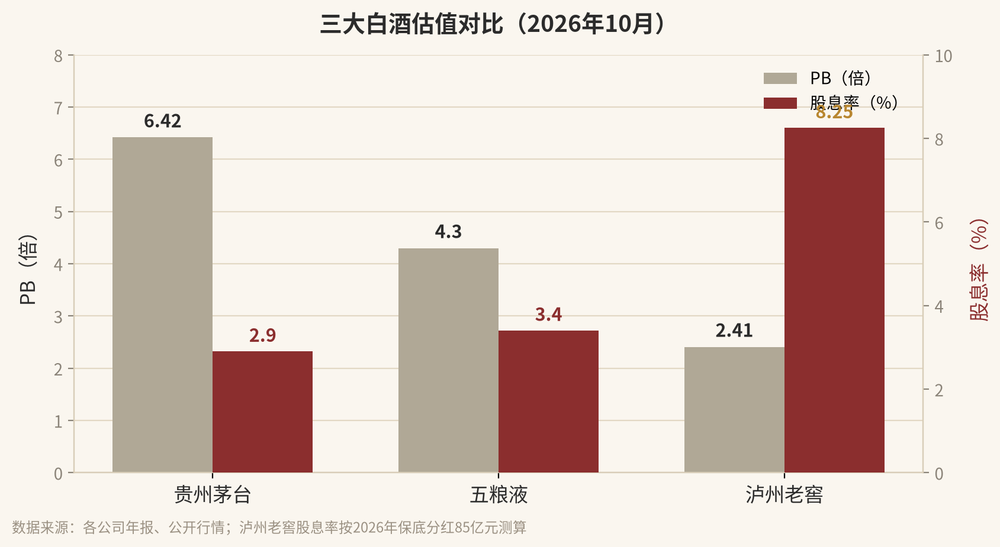

10 月 30 日，A 股震荡调整，白酒板块逆市上扬。泸州老窖午后封涨停，收 77.07 元，涨 10.01%。同一天，它交出了一份很难看的三季报。
利润降了 57%，股价却涨停。
前三季度，营收 146.68 亿，同比 -36.6%；归母净利润 56.71 亿，同比 -47.3%。Q3 单季更难看，净利 13.32 亿，同比 -57%。
这么一份报表，市场为什么用涨停回应？我把它拆开来，一层一层说。
先给结论：最难看的数字，可能恰恰是最难的时刻。价盘稳了、现金流回来了、分红保底 85 亿——这三条，市场认。
01
先看报表：数字到底说了什么
泸州老窖 2026 年前三季度核心数据
| 前三季度营业收入 | 146.68 亿 | -36.6% |
| 前三季度归母净利润 | 56.71 亿 | -47.3% |
| Q3 单季营收 | 41.95 亿 | -37.1% |
| Q3 单季归母净利润 | 13.32 亿 | -57.0% |
| Q3 经营现金流净额 | 23.64 亿 | 超上半年 |
利润下滑是事实，不用粉饰。但看报表不能只看利润。有一个数字，比利润重要得多——Q3 单季经营现金流净额 23.64 亿，已经超过了上半年的 20.82 亿。

▲ 经营现金流净额环比大幅改善。数据来源：公司半年报、三季报
利润是权责发生制，可以调节；现金流是真金白银，骗不了人。Q3 回款比上半年好，说明渠道的钱开始往回走了，动销在边际改善。
利润还在底部，但现金流先拐头了——这往往是困境反转的第一个信号。
02
护城河没丢：最硬的东西还在
行业下行期，最该看的不是增速，是护城河还在不在。泸州老窖的护城河，是钱买不走的东西。
1619
口百年以上窖池
91.3%
百年以上国宝窖池
占全行业比例
450+
年连续酿造
从未间断
浓香型白酒的核心资产是窖池。窖池越老，窖泥里的微生物群落越稳定、越丰富，出的酒越醇。一套成熟的窖池生态，要几十上百年才能养出来。
新窖池出的酒，和老窖池不是一个东西。这不是配方问题，是时间问题。全国百年以上的国宝窖池，九成以上在泸州老窖手里。
钱可以砸广告、盖厂房，但买不走四百五十年的时间。
这次调整里，最关键的正面信号是价盘稳住了。据渠道调研，高度国窖 1573 批价至今保持相对平稳；公司在股东大会上明确表态，52 度国窖 1573 终端价格已成功企稳。低度国窖延续全国化，已经站稳百亿级低度白酒阵营。
价格没崩，品牌就没伤。品牌在，护城河就在。
03
管理层在做什么
这份报表不是被动挨打打出来的，是主动选择的结果。公司在做几件事：
一、控量挺价，以销定产。不追求短期数字好看，主动控产降速，优先消化渠道库存。董事长刘淼多次强调，以终端真实动销、渠道库存、价盘水平为锚，动态调整生产发货。
二、配额精细化管理。推行"以销定配、配额挂钩动销"，把渠道配额和真实开瓶量绑定。库存总量持续回落，挤掉的是水分，留下的是真实需求。
三、营销数字化 3.0。总经理林锋把 2026 年定为公司"数字化应用年"，营销工作全面迈入数字化 3.0 阶段。用数据管渠道、管终端、管动销，而不是靠拍脑袋。
四、区域深耕。"235+100"区域战略深化，百城计划 3.0 启动。在行业收缩期反而扎深渠道，等行业回暖时，这些点位就是放大器。
五、低度化卡位下一代。低度国窖站稳百亿级，提前布局年轻消费场景。别人在守，它在卡位。
六、品质定力不动摇。持续推进优质产能储备与质量提升计划，加大优质基酒的战略储备。行业下行期不偷工减料，这是最贵的品牌资产。
这一套动作看下来，管理层没有慌。它在做对的事，只是对的事短期会让报表难看。
下行期最考验管理层：是保报表还是保长期。泸州老窖选了后者。
04
现在贵不贵：PB 2.4 倍，分红保底 85 亿
看估值，先看三个数：每股净资产、股价、分红承诺。
截至三季报，泸州老窖每股净资产 31.97 元。涨停后股价 77.07 元，对应 PB 约 2.41 倍；涨停前股价约 70 元，PB 只有约 2.19 倍。

▲ 三大白酒估值对比。泸州老窖 PB 最低、股息率最高。数据来源：各公司年报、公开行情
横向比一眼：贵州茅台 PB 6.42 倍，五粮液约 4.3 倍，泸州老窖 2.4 倍。它是三大白酒里最便宜的那个。
再看市值。泸州老窖总股本约 14.7 亿股，涨停后市值约 1130 亿；贵州茅台 1.74 万亿，五粮液约 5000 亿。泸州老窖的市值，只有茅台的十五分之一、五粮液的五分之一。
股本小、市值小，意味着一旦困境反转，向上的弹性远大于茅台五粮液。
最硬核的保底，来自分红承诺。根据公司《2024-2026 年度股东分红回报规划》，2026 年度现金分红总额不低于归母净利润的 75%，且不低于 85 亿元。
注意，是"且"——两条都要满足。哪怕 2026 年全年利润只有 75 亿，75% 只有 56 亿，但"不低于 85 亿"这条硬保底，意味着公司会用以前年度的留存利润补足差额。
按涨停前 70 元股价、市值约 1030 亿算：
股息率 = 85 亿 ÷ 1030 亿 ≈ 8.25%
利润收益率 = 全年利润（保守估 75 亿）÷ 1030 亿 ≈ 7.3%
PB 对应的 ROE ≈ （75 亿 ÷ 净资产 470 亿）÷ PB 2.19 ≈ 7.3% 盈利回报
8.25% 的股息率，已经超过绝大多数固收产品。这是保底的、现金形式的回报。再加上利润本身对应的盈利能力，以及未来利润修复带来的增长——
这个位置买进去，光分红就有保底，下行空间被分红托住，上行空间靠利润修复打开。
05
弹性在哪：困境反转 + 海外惊喜
保底是分红，弹性是反转。
2024 年泸州老窖归母净利润 134.73 亿，2025 年 108.31 亿，2026 年大概率落到 75 亿上下。利润砍了快一半。这里面有多少是周期、有多少是主动控量，市场心里清楚。
一旦行业库存出清、价盘企稳传导到报表，利润从 75 亿回到 100 亿、再回到 130 亿，每一步都是实打实的弹性。而现在的市值，只给了 75 亿利润的定价。
最坏的时候已经在报表里了，最好的时候还没被定价。
海外是另一个隐藏惊喜。泸州老窖的经销网络已经覆盖全球 70 多个国家和地区；截至 2026 年 6 月底，境外经销商 106 家，同比增长 20.45%；进入全球 15 个国家的 71 个国际机场免税终端，覆盖零售终端超过 2000 个。2023 年还首次通过泸州中欧班列把白酒出口到俄罗斯。
海外收入目前占比还不高，但增速快、基数低。它绑定顶级赛事 IP、铺免税渠道，做的是长期的事。白酒国际化一旦跑通，那是另一条增长曲线。
06
前提与风险，也明说
上面的判断要成立，得满足几个前提：
① 国窖 1573 的价盘能够持续企稳，不出现二次松动；
② 渠道库存如期回归健康水平，动销真实回暖；
③ 2026 年 85 亿分红承诺按期兑现；
④ 行业不出现更长期、更严厉的限制性政策。
风险也要直说：如果行业调整深度和时长超预期，利润可能继续下探；85 亿分红若大幅超过当年利润，需要消耗历史留存，不是无限可持续；短期股价波动无法预测，涨停不代表拐点已确认。
我算的是价值，不是股价。价值有底，股价没有。
07
写在最后
10 月 30 日那个涨停，不是因为报表好看，是因为市场终于在难看的数字下面，看见了几件正在变好的事：
价盘稳了。现金流回来了。分红保底 85 亿。PB 只有 2.4 倍。
而最难的报表，可能就是最难的时刻。
涨停不是终点，
是市场终于看见了报表背后的东西。
好东西一定有价值。价值在底部的时候，价格往往最难看。
你的钱，你负责。我的判断，我负责。
声明：本文为个人投资思考记录，不构成任何投资建议。文中数据来自泸州老窖 2026 年三季度报告、半年报及公开报道，可能存在滞后或误差。股市有风险，投资需谨慎。